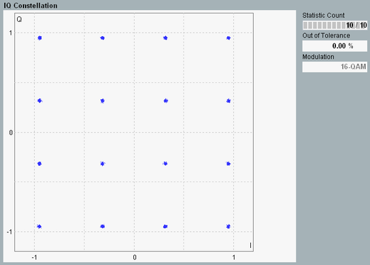

The constellation diagram shows the modulation symbols as points in the I/Q plane. It gives a graphical representation of the signal quality and can help to reveal typical modulation errors causing signal distortions.

The constellation diagram depends on the modulation type. For an ideal signal, the QPSK constellation diagram consists of four points, on a circle around the origin, with relative phase angles of 90 deg. The 16-QAM and 64-QAM modulation schemes produce rectangular patterns with 16 and 64 points, respectively.
The results can be calculated at the low extremities or at the high extremities of the EVM window, see "EVM Window Position".
See also: "I/Q Constellation Diagram"
For additional information, refer to "Common View Elements".